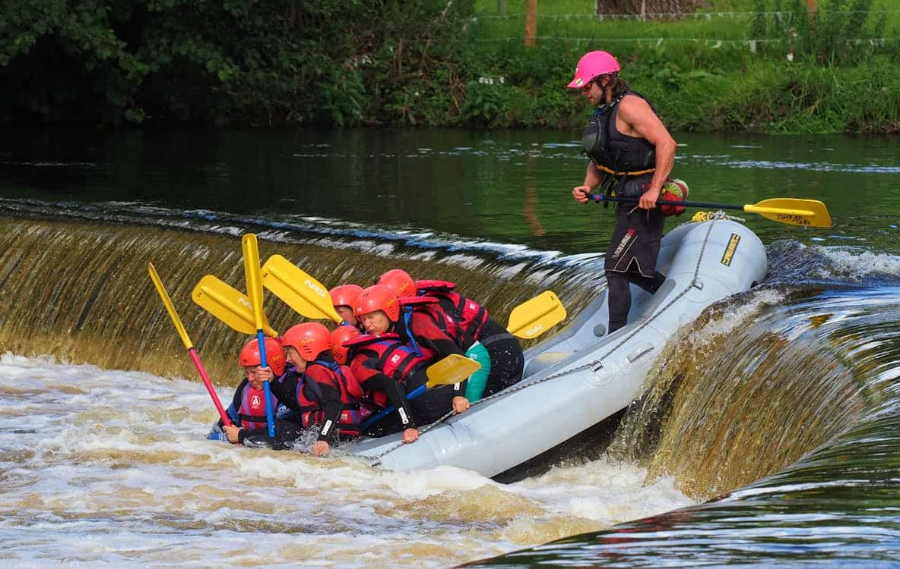

Rafting Família
Uma aventura tranquila e divertida para quem deseja conhecer o rafting pela primeira vez. O percurso possui corredeiras leves e é acompanhado por guias experientes durante toda a atividade.
Duração: 2 horas
Nível: Fácil

Escolha a aventura que mais combina com você. Temos experiências para iniciantes, famílias e aventureiros que procuram desafios maiores.
Uma aventura tranquila e divertida para quem deseja conhecer o rafting pela primeira vez. O percurso possui corredeiras leves e é acompanhado por guias experientes durante toda a atividade.
Duração: 2 horas
Nível: Fácil

Um passeio para quem procura mais emoção. O trajeto combina trechos tranquilos com corredeiras de intensidade intermediária, proporcionando adrenalina e belas paisagens.
Duração: 3 horas
Nível: Intermediário

Desenvolvido para aventureiros que desejam uma experiência mais intensa. O percurso apresenta corredeiras mais fortes e exige disposição para enfrentar um verdadeiro desafio nas águas.
Duração: 4 horas
Nível: Avançado
| Passeio | Duração | Dificuldade | Idade mínima | Preço |
|---|---|---|---|---|
| Rafting Família | 2 horas | Fácil | 8 anos | R$ 120,00 |
| Aventura nas Corredeiras | 3 horas | Intermediário | 12 anos | R$ 180,00 |
| Expedição Radical | 4 horas | Avançado | 16 anos | R$ 250,00 |
Entre em contato com nossa equipe para tirar dúvidas, consultar disponibilidade e escolher o passeio ideal.
Fale Conosco